孖仔帮
与您分享双胞胎育儿路上的囧人囧事
点击蓝字
关注我们
文|圆圈妈
01
2018年9月16日，我们大深圳被一场代号“山竹”的台风袭击了。
据说30年难遇，深圳已经启动了最高级别的“四停”，台风过境后场面非常壮观，我的朋友圈被这些惨状刷屏了。
台风山竹发威的当天，我自知体重不足，抗台风能力有待提高，只好认怂带着圆圈兄弟躲屋里看台风。
今天是台风过境后的第三天，幼儿园恢复正常上课，我送圆圈兄弟去上学后，照例去小区附近的公园跑步。
公园也惨遭袭击，满目疮痍，一些树木拦腰折断，甚至有些老树被连根拔起，有一个画面让我非常感动。
一根大树已经连根拔起，卧倒在地，它边上的两颗小树，除了部分树枝被折断，其他均完好无损。
作为一名母亲，我觉得，那颗倒下的大树是两颗小树的妈妈，她为了保护两颗小树不被台风伤害，用她硕大的枝干为两根小树撑起一片晴空，无奈不敌台风，被连根拔起。
不得不感叹，蕴藏在生命基因中最深处的力量就是母爱。
母爱是世上最无私的情感，并不是人类的专利，从低等动物到高等动物，都有母亲为后代尽职尽责地付出。
这让我想起2008年汶川大地震后，也曾有一位母亲感动了无数人。
当搜救人员发现她时，她已经去世了。可她的身体却维持着一种“诡异”的姿势，双膝跪地，整个上身向前匍匐着，双手扶着地支撑着身体。
等到搜救人员走近了才发现，在她以自己的身躯支撑起的小小空间，还有一个用被子裹着的，三四个月大的婴儿。
08年我当时还是大学校园的一枚少女，对这样的图片没有多大感触。十年后的今天，我作为一个双胞胎孩子的妈妈，再看这样的画面，居然泪流满面。
护犊之心，人皆有之。
世上唯一不会发生改变的，只有父母之爱。父母之爱，超越本能，超越生死。
在灾难面前， ，无数父母毅然决然选择牺牲自己的性命去护子女周全，如同这颗大树一样哪怕连根拔起也在所不惜。
02
《养育男孩》一书中提到父母首要责任是：要把孩子的安全放在第一位。
的确，孩子的生命在，希望才在，才有后面的吃喝拉撒睡…
年幼的孩子对生死没有概念，对安全和危险没有分寸，对很多事物还没有分辨能力，只能依靠我们成年人在身边引导和教育。
在他们尚未长大成人可以对自己生命负责之前，我们都应该为孩子撑起一片安全地带，把他们带离危险，远离灾难。
前不久发生的青岛双胞胎姐妹花溺亡事故让多少人痛心惋惜啊。我也是个双胞胎妈妈，我深知养育一对双胞胎孩子非常不容易。
我不敢想象姐妹花的妈妈得知两姐妹均溺亡的反应，我一个陌生人看着那对姐妹花变成海的女儿，惋惜心痛到无法入睡，更何况是那位可怜的妈妈。
这个事件让我郁闷了许久，也给我敲醒了警钟。
我看着睡得一脸香甜的圆圈兄弟，不禁发出感慨：“你们还那么小，我要怎么做才能保护你们完好无损长大成人，直到你们可以对自己的安全负责，对自己的生命负责。我真的可以做到吗？我有信心吗？”
当圆圈兄弟因早产进新生儿科观察的时候，圆圈外婆安慰我说：“有苗不怕长！”我曾经一度认为，养孩子，无非就是管他们的吃喝拉撒睡，长大成人即可。
殊不知，上帝早有安排！
育儿道路上并非一帆风顺的，保护孩子周全就是一个最大的考验。
我终于明白为什么万千父母对孩子的期待通常只有一个，那就是愿你平安健康长大成人。
是的！我对圆圈兄弟的期待亦如此。
03
可是美好愿望并不是靠祈祷就能如愿以偿，我们做父母的要从实际行动中去保障孩子的安全。
有些家长会认为，保障孩子的安全很简单，每时每刻待在他们身边，生病了就打针吃药，出门在外就紧紧相随...
是的，这是必须的！
但保护孩子周全，并不是面面俱到，为孩子包办一切。而是张弛有度，保障孩子安全的情况下，鼓励孩子用自己的方式长大。
我们都知道孩子的成长有其自然规律，要顺应自然，不能拔苗助长。盼望着孩子一夜间秒成人，省的我们操碎心，这显然不现实。
既然不能改变孩子的成长规律，那我们就改变自己，从自身做起！
其实我一点都不佩服那颗连根拔起的大树，护孩子周全的勇气确实令人叹服，但是为何一定要连根拔起悲剧收场呢？这让两颗小树日后遇到更强劲的台风怎么办。
世间最伟大也是最卑微的感情莫过于父母对孩子的爱，一味付出，从不言苦。
如果这颗大树平时汲水生长，拼命扎根，努力强壮自己，早日成为坚不可摧的参天大树，是不是就可以更长久地保护两颗小树茁壮成长呢？
圆圈兄弟出生后三个月，我每天不管多忙多累都会抽时间坚持去小区附近的公园锻炼身体。
这种行为直到现在依然不被圆圈奶奶理解，她认为：“带孩子累死累活的，哪还有力气跑步，应该抓紧时间睡觉。”
而我认为，运动可以让意识更清醒，让思维更清晰，让身体更强壮，我产后不到半年就恢复了，之后也很少生病，真的多亏产后及时锻炼身体。直到现在，我依然坚持着晨跑...
我不想老了之后要靠药物维持生命，自己折腾就算了还要成为圆圈的负担，连累他们为我善后。
我知道，人总有一天会衰老死去，我只想通过运动强身健体，让这个大自然的召唤变得更漫长些。
运动可以让我更加有活力，更加强壮，我不要变成那个风一吹就倒下的大树。
JUST TO BE A BETTER WOMAN…
生命没有了，拿什么去护犊？
04
我自从当妈后就很怕死，从来没有那么期盼自己可以活得久一点。
随着与圆圈兄弟的感情愈加深厚，我更加贪心地想要长长久久地陪伴在圆圈左右。
为他们遮风挡雨，哪怕他们成人了，可以独挡一面了，不再需要我了，我也想静静地呆在角落里，不说话，就那样看着…
有一次，看到轻松筹有一名成绩优异的高中女孩，因为父母生病不得不辍学打工挣钱。
我好气愤这样的父母！
你们早干嘛去了？自己生病受苦还连累了孩子。也许你们是为了孩子拼搏操劳导致疾病，但是得不偿失，最后反而连累了孩子。
我非常最反感那些父母总是以爱的名义失败告终而最后不得不肆意践踏孩子的梦想。
圆圈外公今年查出肝癌，我们一群人都崩溃极了，只有他当事人自己一脸嬉皮笑脸。
我真想冲上前给他一个耳光，大喊：“叫你平时只知道抽烟酗酒熬夜赌博…”
可是，我不能，只能躲到角落，嚎啕大哭…
我不想成为圆圈外公那样，不听手术劝告还冥顽不灵，让四个子女为他伤心落泪，而自己倒不痛不痒。
我现在经历的痛苦，不希望圆圈兄弟将来也如我这般无助绝望。
我一定要好好爱自己，才能好好爱我的孩子，才能不让他们因我而悲伤难过。
即便哪天疾病到来了，我也会离家出走，找个角落，优雅地死去。
（TM…每次写这种鸡巴文章，自己先哭一通！）
因此，父母要护孩子周全，顺利长大成人，除了陪伴他们左右，也要从自身做起，趁年轻，好好善待自己，充实自己，丰富自己。只有这样才更有底气，更有资本保护好孩子。
同时，我希望圆圈兄弟也能敬畏生命，热爱生命，打好坚实的基础，茁壮成长...
不做温室里的小花，而是高山上的雪莲，坚韧，勇敢，带种！
1
END
1
本文系圆圈妈sgguy-com原创，来源于孖仔帮，专注双胞胎孕期育儿经验分享，著作权归孖仔帮所有。
长按二维码图片关注我们
孖仔帮
与您分享双胞胎育儿路上的囧人囧事
我猜你肯定喜欢看下面的文章，对不对嘛？关注孖仔帮，回复下方文章前面的数字编号即可阅读。
105:同卵双胞胎的天敌--双胞胎输血综合征
201:双胞胎与唐氏筛查---美丽的邂逅
212:原来双胎妈妈可以这样数胎动，好简单啊
215:双胎子宫日记系列|（下）你看不看？双胞胎妈妈直播剖腹产全过程
302:喂养干货||如何训练双胞胎宝宝睡整夜觉
306: 真人示范！双胞胎妈妈高难度喂母乳技巧
404:双胞胎家庭生存技巧01：舍不得孩子套不住狼，新生入园开学季必备
604:那些又俗气又搞笑的双胞胎姓名大全【第一季】
711:想要做一个四海八荒的双胎妈妈，你需要这些工具
714:那个每天晚上9点钟才到家的双胎妈妈，失业了…
近日发现有些平台未经允许转载了圆圈妈的文章，在此声明下：
若喜欢圆圈妈的文章，无条件欢迎大家分享转发到朋友圈。
如需转载至公众号请联系圆圈妈（微信sgguy-com）授权，或扫以下微信二维码。
各位双胎妈妈，更多孖仔帮原创育儿文章请猛戳 "阅读原文" ，或者直接上圆圈妈的个人博客，大把双胎孕期育儿心得经验分享。
阅读原文：
https://www.sgguy.com/twinsbang
阅读原文修改于2018年9月18日

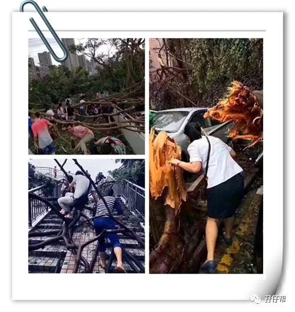
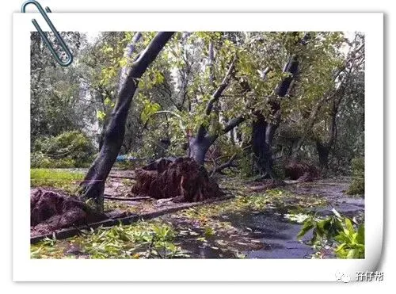
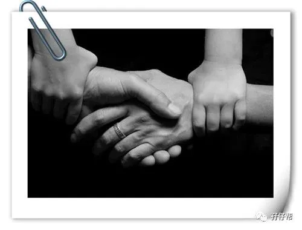
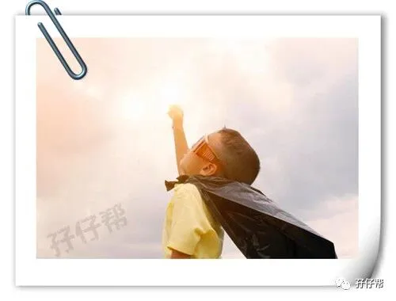
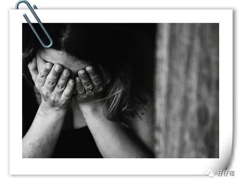
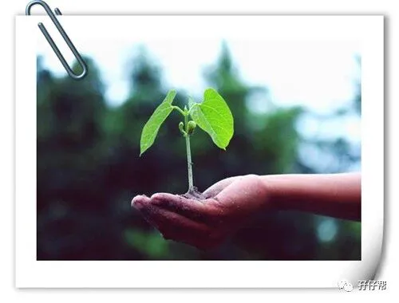
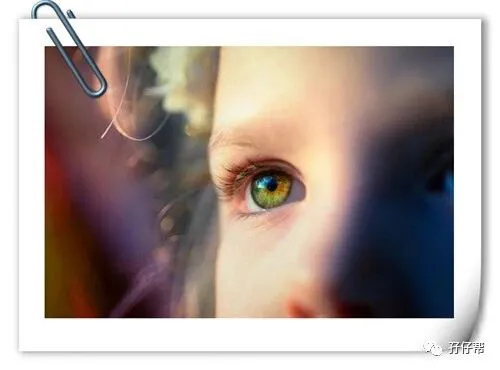
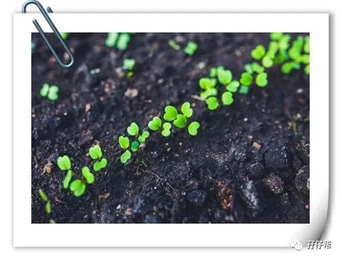
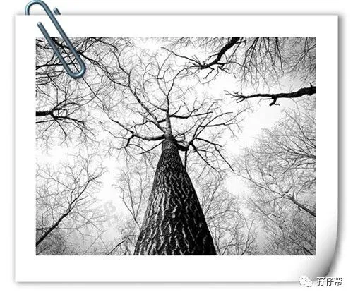
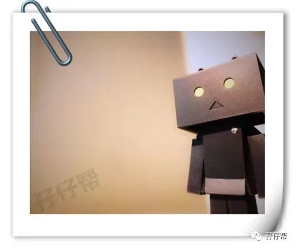
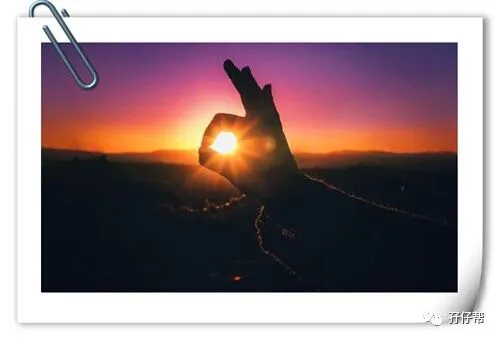
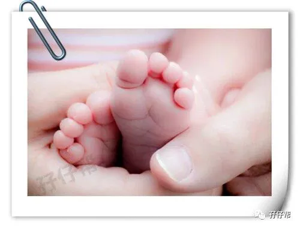